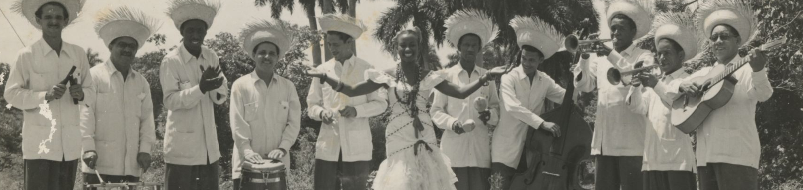

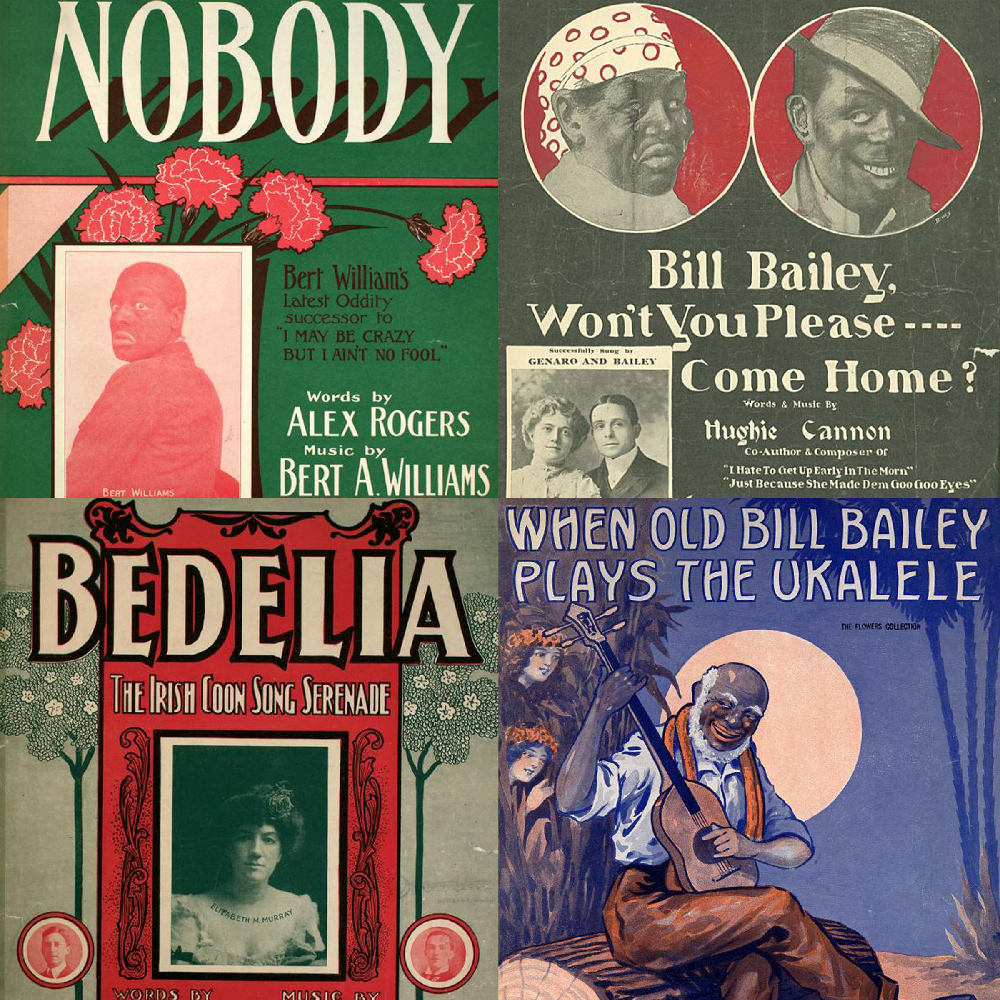
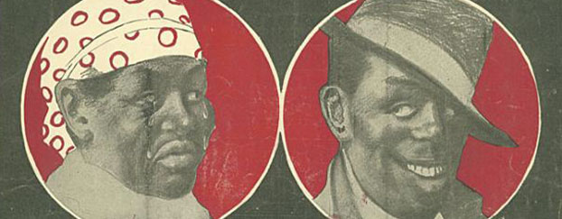
Minstrelsy
One of the most complex and troubling phenomena in the history of American culture, minstrelsy featured performers in blackface. Packed with songs, skits, political satire and dancing, minstrels shows were by far the most popular form of entertainment in the US from roughly 1830 into the twentieth century.
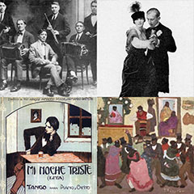
Tango
The tango is a music and dance genre that emerged in Buenos Aires, Argentina and its close neighbor Montevideo, Uruguay during the late nineteenth century. Derived from Cuban and European sources that were reworked by Afro-Argentines and Afro-Uruguayans as well as their white imitators, the tango became enormously popular in Europe and the United States in the 1910s.
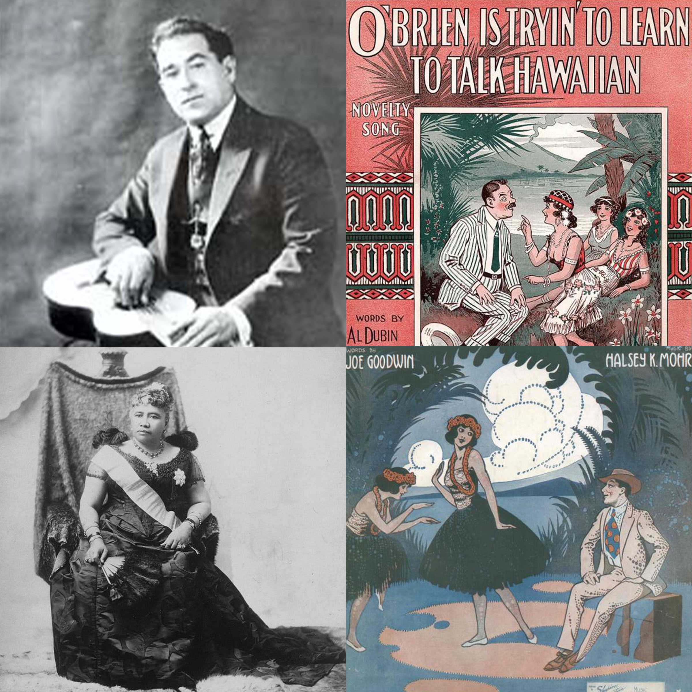
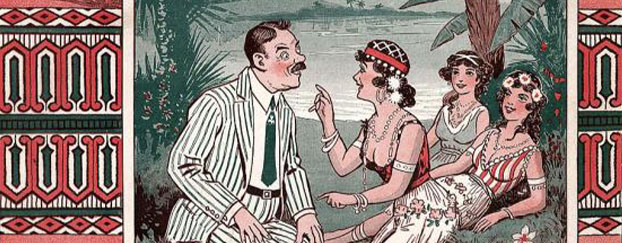
Hawaiian Music
By the time that Hawaii became a colonial possession of the United States, local musicians had developed a distinctive style which would soon become extremely important to popular music worldwide. This style featured the ukelele annd the lap-steel guitar, a regular guitar laid flat on the musicians lap and fretted with a steel bar.
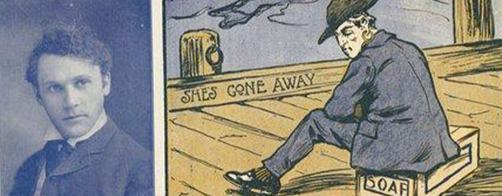
Ethnic Humor
The early record industry drew heavily on Vaudeville, and Vaudeville in turn depended heavily on ethnic humor, based in stereotypes about different nationalities. These comic skits range from good-natured to grossly offensive.
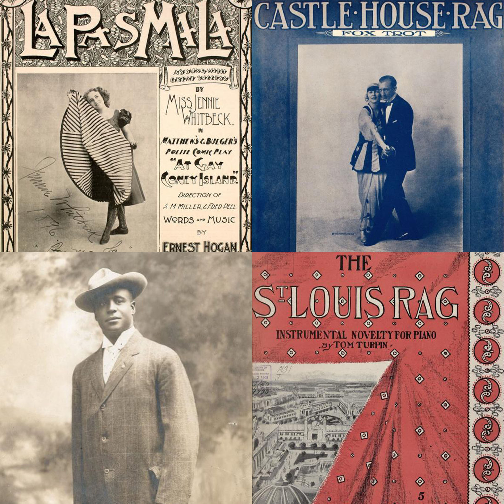
Ragtime
The term signified a lot of things: in one sense if referred to a specific form of African American music, but more broadly it also stood for modernity and sophistication.
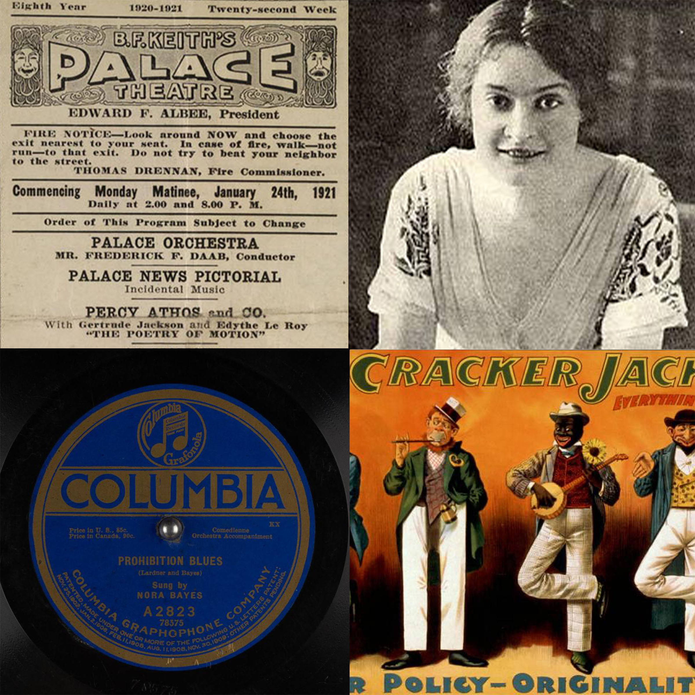
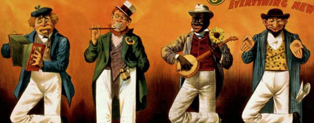
Vaudeville
Like other sectors of the American economy, theaters in this period were increasingly organized into quasi-monopolies, “circuits” that controlled entertainment in cities and towns across the country. Vaudeville offered standard formulas for performance.
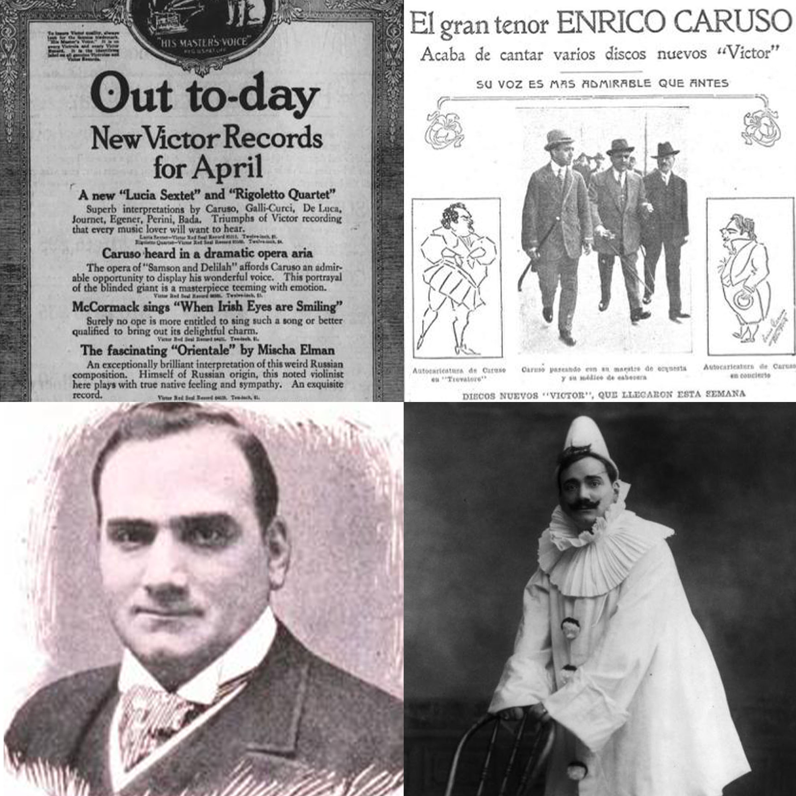
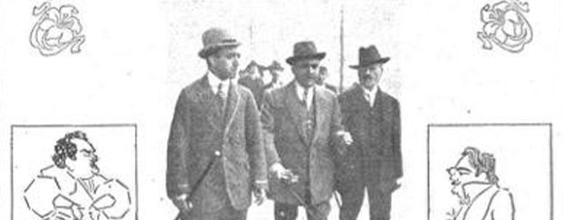
Classical Music
Late 19th and early 20th century Americans understood art and music in terms of “high” and “low”: high culture for the educated elite, low culture for the masses. Classical music as defined by record companies was a central part of high culture.